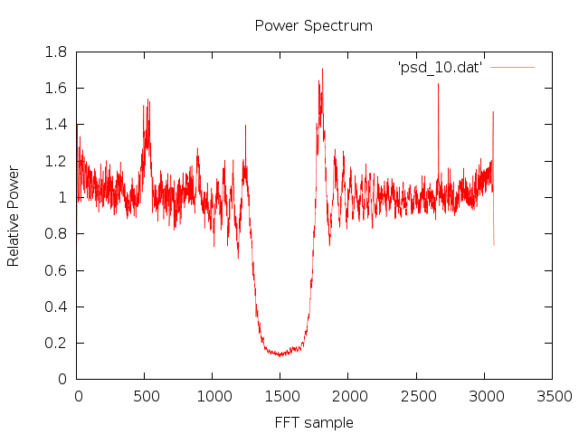

ANSI-C program: extract_psd.c
NAME
extract_psd - Used when
processing JERS data processed to remove radio interferance at
L-Band.Extracts a selected power spectral density function (range
spectra) from *.psd file or the file RFI_filters.dat generated by
the programs pre_rc_JERS and writes the values to
standard output that may then be piped into the plotting program
gnuplot.
SYNOPSISextract_psd <psd>
<num> <output spectrum>
| <psd> | PSD file (generated by pre_rc_JERS) |
| <num> | number of selected spectrum to extract |
| <output spectrum> | output spectrum file name |
EXAMPLE
extract_psd 19931116.psd 10
psd_10.dat
Extract the 10th spectrum in file19931116.psd and store in the
text file psd_10.dat
DESCRIPTION
This program extracts the selected power spectral density
function (range spectrum) from a spectrum file generated by
rspec_JERS and writes the values to standard output. The *.psd
file created by rspec_JERS contains estimates of the power
spectrum of the received signal updated typically every 1000
lines. The file RFI_filters.dat created by pre_rc_JERS contains
the frequency response of the notched range chirp used to
compress the SAR data corrupted by radio frequency interference
(RFI). The notches in the filter should correspond to peaks in
the echo spectrum caused by RFI.
To plot the spectrum with gnuplot on the
screen:
echo "set xlabel 'FFT sample'; set ylabel 'Relative
Power'; set title 'Power Spectrum'; plot 'psd_10.dat' with lines
lw .5 "|gnuplot
or plot to a png image file with gnuplot:
echo "set term png; set output
'psd_10.png'; set xlabel 'FFT sample'; set ylabel
'Relative Power'; set title 'Power Spectrum'; plot 'psd_10.dat'
with lines lw .5 "|gnuplot
An example is shown below. Note the spikes in the spectrum associated with RFI:

SEE ALSO
Users Guide, typedef_MSP.h, Sensor parameter file, MSP Processing Parameter File.